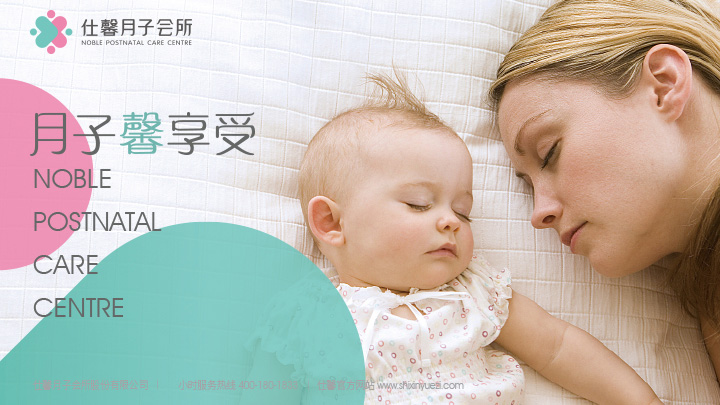

—— 我们的使命 ——
OUR MISSION
推行普惠型月子中心，普及新兴科学月子理念，倾全“馨”之力，仕万千母婴。以科学专业的康护服务，让产后妈妈健康美丽复愈，让新生宝宝聪明健康起航，尽享爱心、贴心、安心、省心的“蜜月”。
BRAND STORY
仕馨月子会所，以普惠型月子服务机构为定位，以推广新型月子 护理理念，普惠广大产后妈妈为宗旨，将现代科学、中医理论与传统月子文化相结合，打 造科学专业、全面周到的母婴健康管理机构。
2009年，仕馨月子会所第一家店——越秀店正式营业，借助毗邻广州市妇婴医院的地理位置优势， 打造了一支拥有三甲医院临床经验的专家团队，培养建立起集合儿科医生、产科医生、中医师、 心理专家和高级营养师等全方位、多维度的康护团队，此后，仕馨将先进母婴医科知识理念与 传统月子文化相结合，采用新兴母婴保健体系，打破传统观念，让产妇得到科学全面的调理和 恢复。
仕馨全面打通月子中心与母婴领域上下产业链条，成立仕馨学院，源源不断地为月子会所输送高新 专业护理人员；同时，成立蜂妈摄影工作室，对准孕婴童人群打造专业摄影服务。目前，仕馨已形 成集产褥期护理、产后康复、婴幼儿早教、孕婴童摄影等服务为一体的多元化专业母婴服务机构。
仕馨拥有8年成熟的月子护理经验，600余人的专业母婴服务团队，众多亲子家庭的高度认可，致力于 打造高品质的服务，让每一位入住会所的孕产妇和新生儿享受到科学、专业、个性化的医学护理及管 家式的星级贴心服务。
FOUNDER
健康快乐是人生极重要的财富，其中健康又是新生儿的命题，国内产后护理月子中心的概念尚未普及，从前也只有富贵人家才住得起月子会所，为了让更多的人享受到真正专业的月子服务，为了给新生儿和新妈妈提供健康舒适的产后护理环境，我创办了仕馨普惠型月子中心，不仅能全方位照顾孕产妇和宝宝的需要，而且帮助整个家庭学习专业健康的护理知识和育儿经验，快乐分享共同成长。这不仅仅是一份事业，更是一种信仰，也不仅是我个人的信仰，更是每一个仕馨人的信仰
OUR MISSION
推行普惠型月子中心，普及新兴科学月子理念，倾全“馨”之力，仕万千母婴。以科学专业的康护服务，让产后妈妈健康美丽复愈，让新生宝宝聪明健康起航，尽享爱心、贴心、安心、省心的“蜜月”。